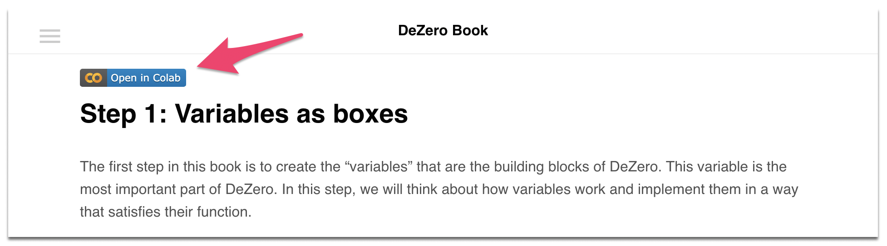

Deep Learning Framework from scratch¶

This is a machine-translated text of the Japanese book titled "ゼロから作るDeep Learning ❸ ―フレームワーク編" that was published in April. 2020, with minimum post-editing.
If you are interested, please take a look.
Sumary of the book
In this book, you will create a deep learning framework called "DeZero" from scratch, which is the original framework of this book. With minimal code, the framework's modern features are realized. This book will complete this small - yet powerful enough - framework in a total of 60 steps. It will deepen your knowledge of modern frameworks such as PyTorch, TensorFlow, and Chainer.
All you need is a browser
You can run the code on this page on Google Colab. In other words, all you need is a browser and you can read the text and execute the code. On each page, you will see a button that says "Open in Colab", as shown below.
By pressing the button above, the content of this page can be executed on Google Colab as it is.
Feedback is welcome
This page is based on machine translation and still needs a lot of improvement. If you can help me brush up on my English, please point it out. The content of this page is maintained at github, so pull requests are welcome.
We are also looking for a publisher to publish the English version of this book. If you have any questions or concerns, please contact us at the email address below.
dl3@oreilly.co.jpContents
- Preface
- Stage 1: Automatically compute derivatives
- Step 1: Variables as boxes
- Step 2: Function to create a variable
- Step 3: Connecting Functions
- Step 4: Numerical Differentiation
- Step 5: Theory of Backpropagation
- Step 6: Back-propagation by hand.
- Step 7: Automation of back-propagation
- Step 8: From Recursion to Loop
- Step 9: Making Functions More Useful
- Step 10: Perform the test
- Column: Automatic Differentiation